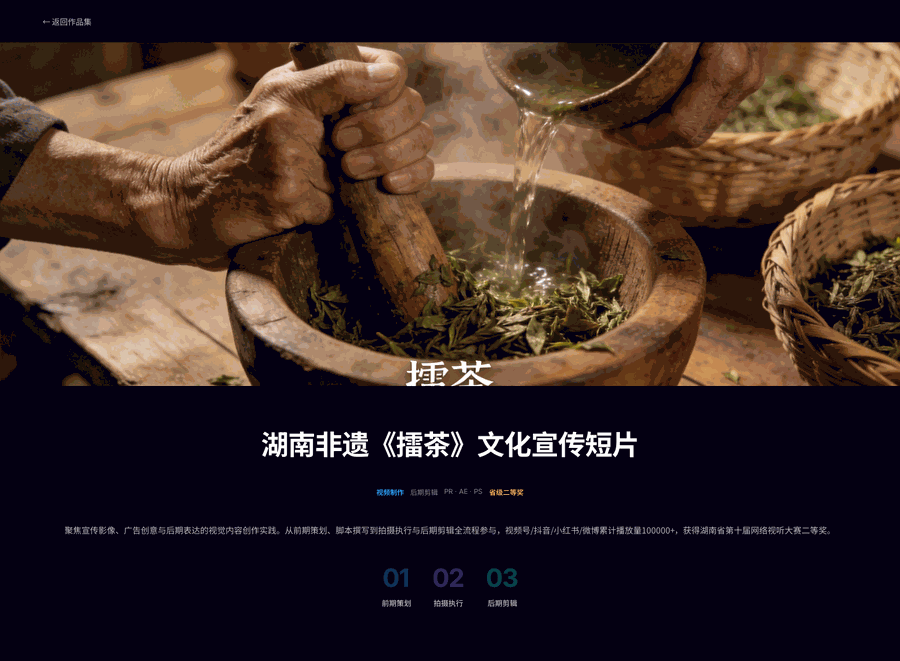
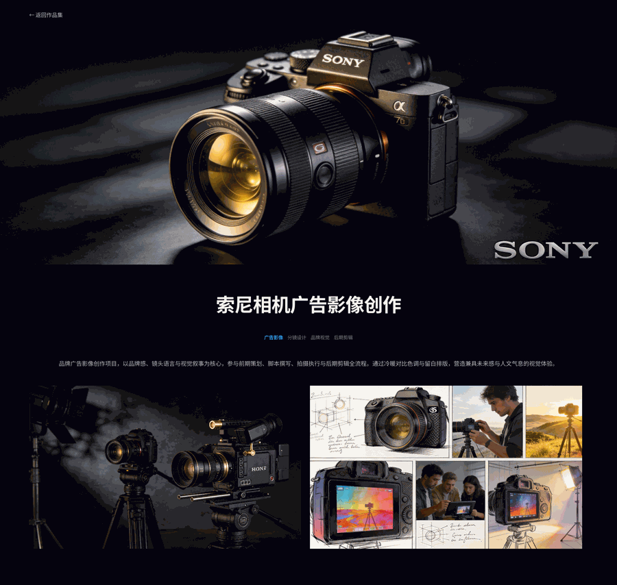
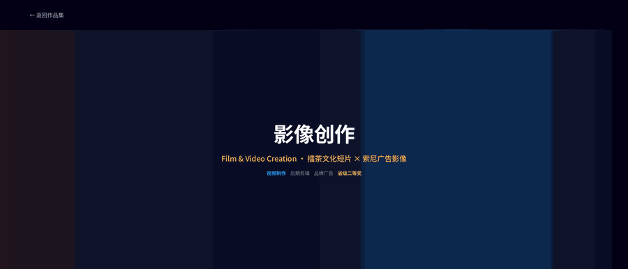

PART.04 · Film & Video Creation
Visual Storytelling
从前期策划、脚本撰写到拍摄执行与后期剪辑，全流程参与影像创作。本合集包含两个代表性方向：一是以湖南非遗「擂茶」为核心的文化宣传短片，累计播放量 10 万+，获省级网络视听大赛二等奖；二是以品牌感与镜头语言为核心的索尼相机广告影像，通过光影控制、叙事节奏与电影感调色，呈现产品精密工艺与人文温度。
湖南非遗《擂茶》文化宣传短片
围绕湖南非遗「擂茶」制作的文化宣传短片。从前期策划、脚本撰写到拍摄执行与后期剪辑，全流程参与创作。以纪实手法记录擂茶制作的每一道工序——选茶、研磨、冲泡、品饮，通过细腻的特写镜头与自然的环境音效，传递非遗技艺的温度与匠心。作品在视频号、抖音、小红书、微博多平台发布，累计播放量 100,000+，获得湖南省第十届网络视听大赛二等奖。
创作流程
调研擂茶文化历史，确定「传承」核心主题，撰写分镜脚本。
实地拍摄擂茶制作全过程，运用自然光与特写镜头捕捉细节质感。
节奏化剪辑配合环境音效与配乐，营造沉浸式观看体验。
作品展示

索尼相机广告影像创作
品牌广告影像创作项目，以品牌感、镜头语言与视觉叙事为核心。参与前期策划、脚本撰写、拍摄执行与后期剪辑全流程。通过冷暖对比色调与留白排版，营造兼具未来感与人文气息的视觉体验。以「看见世界的细节」为线索，从静物特写过渡到户外创作场景，建立情感共鸣，展现索尼相机的精密工艺与创作者的无限可能。
影像亮点
光影控制
使用戏剧性侧光与轮廓光突出产品质感，强化金属机身与镜头的精密工艺。
叙事节奏
以「看见世界的细节」为线索，从静物特写过渡到户外创作场景，建立情感共鸣。
后期调色
采用低饱和冷调为主、暖色高光为辅的电影感调色，保持品牌高端科技调性。